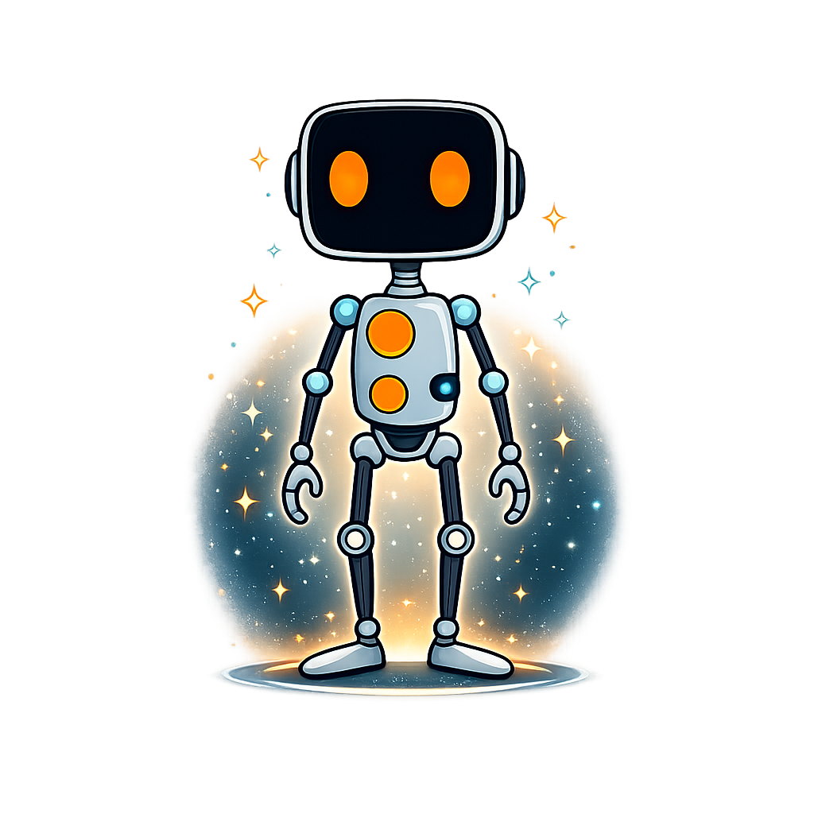

Intent-Driven Autonomous Development Engine
An enterprise-grade AI development harness built on the BDI cognitive model. You define intent. JuhBDI challenges it, plans it, executes it in governed parallel waves, and learns from every outcome.
One command. Works globally across all your projects.
AI coding tools are powerful, but they lack structure. Without governance, traceability, and memory, you get speed without trust.
Most AI tools generate code with no record of why decisions were made, what alternatives were considered, or what constraints were applied. When something breaks, you're debugging a black box.
AI happily implements whatever you ask, even if it contradicts your project goals or violates constraints you've already defined. There's no Socratic challenge, no sanity check.
Every conversation starts from zero. The same mistakes repeat. Successful approaches aren't remembered. Cost-effective model tiers aren't learned. Context resets destroy institutional knowledge.
Most tools route everything through the most expensive model. A simple rename doesn't need the same compute as an architecture refactor, but the bill doesn't know the difference.
Every development request flows through a governed five-stage pipeline. Nothing executes without challenge. Everything leaves a trail.
Define your project as structured goals with measurable targets, hard/soft constraints, tradeoff weights (quality vs speed vs security), and human-in-the-loop gates. This is your source of truth.
Every request is evaluated against every constraint. Hard violations block execution. Soft conflicts generate warnings. Overrides are logged with reasoning. Nothing slips through unchecked.
Tasks are decomposed into waves using receding-horizon planning: only the next wave is fully specified. After execution, beliefs update and the next wave is replanned with fresh context.
Each task runs in an isolated git worktree with intent verification, HITL gate checks, and governance validation. Failures trigger automatic diagnostician + strategist recovery.
Post-execution, principles are extracted from plan-vs-actual divergence. Trust scores update. Successful approaches are recorded for future pre-task speculation. Every run makes the next one better.
Built on the Belief-Desire-Intention cognitive model from agent theory. Not a prompt wrapper — a thinking architecture.
The system's understanding of the world: project state, compressed history, codebase structure (PageRank-weighted repo map), and cross-linked memory from past executions. Updated after every wave.
What you want: structured goals with measurable targets, weighted constraints, and tradeoff preferences. These never change during execution unless you explicitly update them.
The committed execution plan: atomic tasks organized into waves, each with verification commands, goal alignment, and model tier routing. Replanned after every wave based on updated beliefs.
Every feature exists because unstructured AI development fails in predictable ways. These are the structural answers.
5-signal algorithm evaluates override, memory match, structural complexity, tradeoff bias, and failure escalation for every task. Trust scoring learns which tiers actually work, so you stop overpaying for simple tasks.
Every decision is logged with SHA-256 chaining: what was decided, why, what alternatives were considered, which constraints applied. Designed with enterprise compliance and EU AI Act traceability in mind.
Tasks decompose into parallel waves. Each runs in an isolated git worktree. On failure, a diagnostician agent identifies root cause and a strategist agent proposes a new approach — automatic recovery without human intervention.
A-MEM records every execution as a cross-linked triplet. Before each task, the system speculates on approaches from past experience and surfaces principles extracted from plan-vs-actual divergence. Knowledge compounds.
Human-in-the-loop gates for sensitive operations. Destructive command blocking. Constraint enforcement at every step. Intent verification runs before each task — if a task doesn't serve a stated goal, it doesn't execute.
A rules engine scores natural language prompts against pattern categories. When confidence exceeds threshold, JuhBDI suggests the appropriate command. You don't need to remember the commands — it meets you where you are.
Real numbers from JuhBDI's own test suite and internal benchmarks. No synthetic demos, no cherry-picked runs.
Benchmarks from M10 "Apex Predator" release (v1.4.1). Routing accuracy measured across 50 synthetic tasks with known optimal tiers. Capability comparison based on 27-point feature matrix evaluated across 7 competing tools in the Claude Code plugin ecosystem. Full methodology available in the repository.
Give your OpenClaw agents enterprise-grade governance. Intent verification, SHA-256 audit trails, learning memory, and trust scoring — works with any LLM.
Agents challenge vague or risky requests before executing. Destructive actions flagged automatically. No more blind execution.
Every decision logged with SHA-256 hash chains. Tamper-evident, verifiable, compliant. Know exactly why your agent did what it did.
Agents learn from past tasks. Successful approaches recalled. Failed approaches avoided. Principles extracted and applied automatically.
Track model reliability across tasks. Trust builds with successful completions. Low-trust models flagged before they run critical work.
Compatible with all 13,700+ OpenClaw skills. Makes every skill smarter with governance, memory, and learning.
Everything you need to understand JuhBDI's architecture, commands, and cognitive model.
| Command | Description |
|---|---|
| /juhbdi:init | Initialize project — scans codebase, asks about goals, creates governance config |
| /juhbdi:plan | Interactive planning — discovers intent, analyzes code, generates wave-based roadmap |
| /juhbdi:execute | Governed execution loop with parallel worktrees, model routing, and auto-recovery |
| /juhbdi:quick | Fast-track simple tasks (skips full planning, keeps governance) |
| /juhbdi:status | Dashboard: progress, routing stats, cost intelligence, context health |
| /juhbdi:cost | Cost analysis: per-task spend, savings vs always-opus, tier distribution |
| /juhbdi:trail | Query the SHA-256 chained audit trail |
| /juhbdi:audit | Verify decision trail integrity (tamper detection) |
| /juhbdi:reflect | Extract learned principles from plan-vs-actual divergence |
| /juhbdi:pause | Pause execution with full context handoff |
| /juhbdi:resume | Resume from handoff in a new session |
| /juhbdi:validate | Validate roadmap structure and intent alignment |
| /juhbdi:activate | Inject JuhBDI activation into CLAUDE.md |
Four commands. From intent to governed, tested, auditable code with a learning loop that compounds across every session.
Intuition doesn't scale. Systems do.
JuhBDI started from a simple observation: AI coding tools are getting faster, but not more trustworthy. You can generate thousands of lines of code in minutes, but you can't explain why any particular decision was made. You can't audit it. You can't prove it respects the constraints your team agreed on.
We think autonomous development needs the same rigor that autonomous vehicles needed. Not just "does it work?" but "can you prove it works, explain why it works, and show it won't break what was already working?"
The BDI model gives us that structure. Beliefs maintain state and memory. Desires hold your goals as immutable contracts. Intentions are the executable plans that get challenged, verified, and audited at every step. When something goes wrong, the trail shows exactly what happened and why.
This is version 1.4.1, the result of 10 milestones of iterative development. Every feature was built using JuhBDI's own pipeline (yes, it builds itself). We're not done — community marketplace is the next frontier — but the core architecture is stable, tested, and ready for teams that need governed autonomy.
Built by Julian Hermstad at JuhLabs.